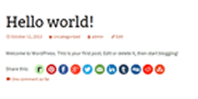
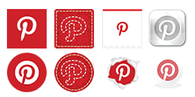
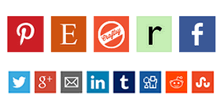
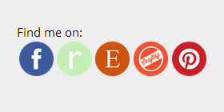
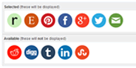
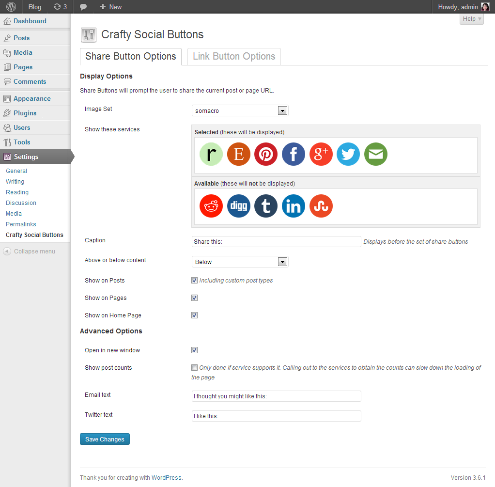

Automatic
Add Share buttons to your posts or pages (or both - your choice)

8 Icon Sets
Choose one of 8 icon sets to match your theme (or add your own!)

12 Social Services
Choose which social services to include, in any order (plus email!)

Link Buttons
Add links to your profiles in your header, footer or sidebar

Use with any theme
Icons are designed to work with a variety of different background colours

Easy Setup
Simple administration interface with built-in help lets you configure easily
Icon Sets
These nine icon sets are included with the plugin. It is also possible to add more
using the instructions below.
Arbenting
Crafty Stitchy Round
 Crafty Stitchy Square
Crafty Stitchy Square
 Metal
Metal
Page Peel
 Ribbon
Ribbon
 Simple
Simple
Somacro
Admin Interface
The settings are available in your Wordpress Admin under Settings > Crafty Social Buttons
More information about the plugin is available in the Help, which you can view by
clicking the Help button in to top right of the admin screen.
Share button options

Link button options

FAQ
What are Share Buttons?
Share buttons allows you to put a set of buttons at the top or
bottom of each post. Each button will share that post with that particular service.
That is, clicking the facebook icon will open a window for the user to share your post on
their Facebook page. (Note that not all services support sharing, for instance,
you can't share via Etsy or Craftsy.
What are Link Buttons?
Link buttons let you link the icons directly
to your profiles on the social networks. So clicking the facebook icon will take the
user to your facebook page, clicking the Etsy icon will take them to your Etsy shop.
These are designed to be included in either your header, sidebars or footer, as they
are not specific to a post. These can be easily included by adding the Social Link
Button widget to the area where you want the buttons to appear.
Which social services are included?
- Digg
- Craftsy (link only)
- Email (share only)
- Etsy (link only)
- Facebook
- Google+
- LinkedIn
- Pinterest
- Ravelry
- Reddit
- Stumble Upon
- Tumblr
- Twitter
Do the link buttons and share buttons
have to use the same services?
No. You can choose exactly which services you want separately for each mode,
so you can can have Share buttons for Ravelry, Pinterest, Facebook, Twitter and
Email, but have Link buttons for Google+, Pinterest and your Etsy shop.
Do the link buttons and share buttons
have to use the same icons?
No. You can also choose different icon sets for each.
Can I add a different set of icons?
Yes! Please see below for instructions.
Can I change the size of the icons?
There isn't currently an option for this, although it should be added in a future version.
If you don't mind editing your theme's CSS (or the plugin's CSS), you can see the instructions below.
Can I have more control over where to put the icons?
Yes! See the instructions section below on how to use the widget,
shortcodes, or action hooks.
Can I add a different social/craft network?
I'm happy to take requests for new services to add.
Instructions | Install
The easiest way to install is through the WordPress control panel. This will be available soon.
You can also download the plugin and then follow these steps:
- Upload the whole
crafty-social-buttons folder to the /wp-content/plugins/ directory
- Activate the plugin through the 'Plugins' menu in WordPress
Once you have activated, you will see a message bar confirming that it has
been installed, with a convenient link to the settings page where you can
configure the options for how and where the buttons will appear.
You will also find a new Widget called Crafty Social Link Buttons, which can be added to any widget area in your theme.
Instructions | Shortcodes
The buttons can also be included in any post or page by using one of these shortcodes
in your page or post content:
[csbshare] for the Share buttons[csblink] for the Link buttons
Instructions | Action Hooks
If your theme doesn't have a widget area where you want the buttons to be placed,
you can include them by editing your theme template. Just include one of these links
in your template to generate the buttons:
<?php do_action('crafty-social-link-buttons'); ?><?php do_action('crafty-social-share-buttons'); ?>
Since the Share buttons are page/post specific, the shortcode is usualy best,
and since the Link buttons are site/site owner specific, the widget or action
hook will normally be a better choice.
Instructions | Styling
You can override the styles used by the plugin to better match your theme.
The entire block is wrapped in a .crafty-social-buttons class, as well as either
.crafty-social-share-buttons or .crafty-social-link-buttons, so you can
style the share and link buttons separately.
The caption is an inline-block with the class .crafty-social-caption. The images
are img tags inside unordered list items.
Instructions | Changing Sizes
This is the CSS that determines the default icon size:
.crafty-social-buttons img
{
max-width: 48px;
max-height: 48px;
}
You can override that in your theme to change the icon size. The icon images are mostly
64x64px so they won't look good if they are bigger than that.
Instructions | Adding Icons
Here is what you need to do:
- Prepare your icons. They should ideally be 48px square and png format.
If they aren't that size, see
above for how to modify your CSS to set a different size.
- Name your icons the same
as the existing icon sets. The names are quite straighforward, e.g.
facebook.png and ravelry.png.
- Find the
buttons folder inside the crafty-social-buttons
plugin folder.
- Create a new folder inside here (next to the existing folders). It is best if your
folder name doesn't have spaces or punctuation
- Upload your icons into this folder
You should now be able to choose your custom icon set in the settings screen.
Credits
This plugin was made with love by me, Sarah Henderson,
a freelance web developer from New Zealand.
I recently learned to crochet and thought of starting up a crochet related blog
to show off my new creations. I got a bit sidetracked making pretty icons and
WordPress plugins and thought that others in the crafty community might want to
use them too.
I really hope you find this plugin useful. Please don't hesitate to
contact me with any issues you have,
or any requests for new features. If you want to contribute towards its further
development, (or you just want to say thank you), you can
buy me a coffee.
Acknowledgements
Thanks are due to the lovely people who make beautiful icons and other resources freely available:
This plugin is licenced under GPLv2. It is open source, feel free to contribute by forking it on Github